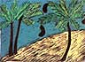
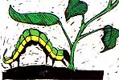

SEASONS OF THE GARDEN
Foam away frost? According to East German experiments, an eight-inch layer of nontoxic, biodegradable foam protects strawberry, tomato, bean and potato plants from several hours of subfreezing temperatures (even down into the teens). The product is not yet commercially available.
Stretchy tree paint.Tree-Max, a paint specially formulated to protect the trunks and lower branches of fruit trees from sun scald, contains an elastic material that allows it to stretch and grow with the tree. The permeable paint is available from Associated Technical Consultants, 352 Morris St., Toledo, OH 43602.
Freeze herb pests. Dr. A.D. Tucker of the Delaware State College Herbarium says that freezing harvested herbs for 48 hours at 0°F should kill all insect pests and egg clusters. Dried-on-the-vine raisins are now feasible, at least in fairly arid regions. For details, write to H.E. Studer (Dept. of Agricultural Engineering, University of California, Davis, CA 95616) for a copy of his paper, "Raisin Production by Natural On the-Vine Drying."
Death to multiflora rose . If you've ever struggled against that invasive briar, multiflora rose, you'll be glad to hear about rose rosette. This disease causes deformed stems, altered leaflet development and bright red spring shoots one year-and kills the entire plant the next!
Cool compost, please . According to research at the Ohio Agricultural Research and Development Center, soil mixes containing materials composted at moderate temperatures can help suppress damping off of seedlings. However, compost cooked at high 'temperatures (above 140°F) can actually pro mote such fungus diseases. Apparently, the beneficial microorganisms that attack damp ing off are killed by the higher temperatures.
Thank you, tropics. Most bean varieties are rather poor nitrogen fixers. But horticulturist Frederick Bliss at the University of Wisconsin has developed new kidney, pinto and white northern cultivars that can fix up to 50 pounds of nitrogen per acre (the equivalent of over 100 pounds of applied N per acre). Bliss crossed commercial cultivars with native beans obtained from the International Center for Tropical Agriculture in Cali, Colombia.
Sprouts need calcium, too. Canadian researchers have found that adding just about 1/4 teaspoon of calcium chloride (available at drugstores) to every gallon of water used to rinse mung bean sprouts can delay stem collapse and decay for up to a week after germination.
Urban garbage goodies. Seattle is promoting composting as the least expensive way to recycle household organic wastes. The program includes literature, demonstration sites, a master composter's program-even a composting hotline. For more information about community compost education programs, contact the Seattle Solid Waste Utility, 710 2nd Ave., Suite 750, Seattle, WA 98104.
Gleanings.
In cooperation with the Natural Organic Farmers Association, the New Hampshire Cooperative Extension Service (College of Life Science and Agriculture, Taylor Hall, University of New Hampshire, Durham, NH 03824) has published a free extension bulletin titled "Pest Control for Organic Vegetable Growing." . . . Flower-pressing supplies, booklets and kits are available from BJG Associates, Box 463, Edgemont, PA 19028 (free brochure) .... Guardian is the first biological insect control product that uses beneficial nematodes to control pest insects inside greenhouses. Look for it in garden stores soon .... The best source for books about growing and using herbs is Only Herbs, 1936 Greenwood Lake Tpk., Hewitt, NJ 07421 (send $1 and a long SASE for a catalogue).
Limas and Loopers
They grow faster and they get eaten faster. That sums up the findings of entomologists at the University of California, Riverside, who grew lima beans under conditions of elevated levels of atmospheric carbon dioxide and then introduced cabbage loopers.' The motivation for this research is the continuing increase (about 0.3°70 per year) in the concentration of global atmospheric capon, dioxide, mainly due to the combustion of fossil fuels. Agricultural and horticultural researchers expect the increased carbon dioxide concentration to affect plant productivity, but they aren't sure to what extent. Theoretically, more carbon dioxide should result in faster plant growth. It should also reduce the ratio of nitrogen to carbon in plant leaves, so that animal and insect herbivores will have to eat more of the leaves to get the same nutritional value.
The California research results agree with the theoretical predictions: With more carbon dioxide, lima bean plants grew faster and were eaten faster by cabbage loopers. In fact, the extra growth was about offset by the extra looper feeding. It looks like we might be headed for a frenzy of accelerated crop production and consumption.
Greg and Pat Williams raise most of their food on a small farm and publish Hort-Ideas, a fine newsletter on gardening research and products ($10 a year from G. & P. Williams, Rt. 1, Box 302, Gravel Switch, KY 40328).
|
 |
|
 |